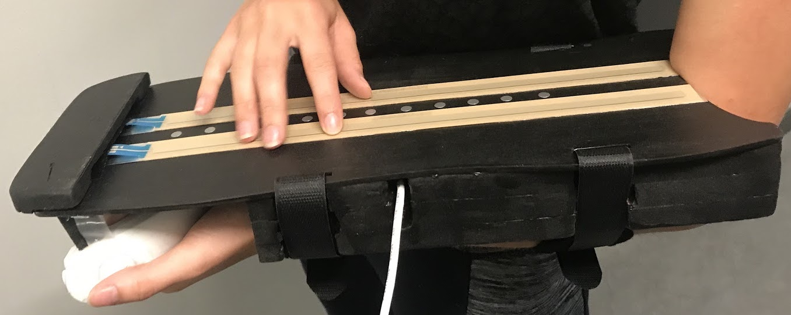

The ArMIDIllo was created as part of a Waterloo Design Project. Throughout the term, our team performed extensive user testing, iterated upon, and built a final medium fidelity prototype. To build the final product, we used an Arduino Uno, TEENSY 3.5, capacitive touch sensors, Wii Nunchuck, and Ableton Live.
Problem Space Definition
Current instrument selections present many obstacles for those with physical disabilities and impede the use of music for self-expression. With current market offerings neglecting this, the team decided target this highly impacted user group. For those who have lost the ability to utilize one side of their body, specifically an upper extremity, difficulties with various aspects involved in playing an instrument are encountered.
Simple actions for able-bodied users, including lifting and gripping the instrument often pose issues. In exploring various target user groups, it was revealed that stroke survivors represent a frequently impacted user population. In particular, studies have revealed that 65% of patients experience hemiparesis - motor impairment and weakness on one side of the body - following their stroke. This drove the team towards the following goal: to positively impact the daily lives of stroke survivors, offering a solution for self-expression through the independent creation of instrumental music.

Benchmarks & Metrics
Based on the user research completed, a list of prioritized user needs and performance requirements was developed. As the team’s main goal was to drive positive impacts for stroke survivors with a passion for musical expression, the focus needed to be on the efficient release of a fully operational, practical, engaging instrument. To evaluate whether each requirement has been met, specific benchmarks were defined to be reviewed for each design phase:
The instrument must function as a MIDI device, as confirmed with compatibility testing with at least two sound synthesizers.
The force required to play notes must be less than the traditional instrument, addressing the lower hand strength and dexterity of the target user group; note activation force must be less than 5N, the plucking force required to play on a guitar.
Instrument must prioritize making the main controls accessible; users must be able to play notes on the instrument using only their dominant hand.
... and so on ...